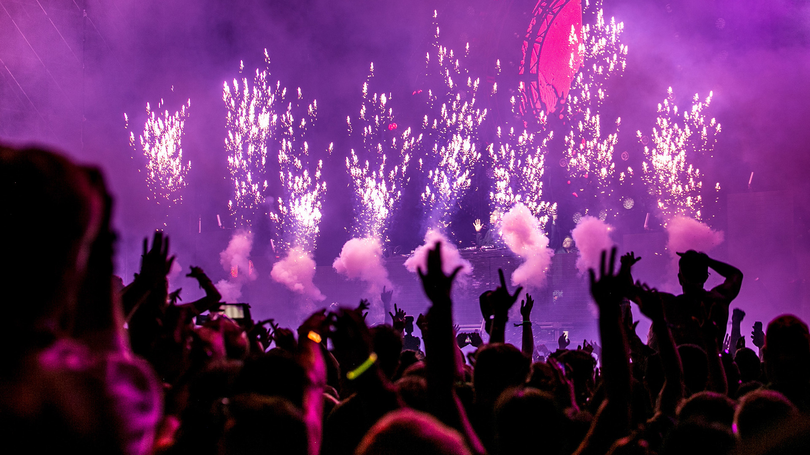

Le cité des étoiles
Notre histoire
La première édition commence en 1995 par une rave clandestine dans un champ du Finistère-Nord, à Kernouës, dans le contexte répressif à l’encontre des raves.
Le festival se déplace au Parc des expositions de Lorient l’année suivante et devient une des rares raves officielles.
Il se déroulera ensuite de 1997 à 2000 au château de Kériolet à Concarneau. À partir de 2001, il se déroule au manoir de Keroual, à Guilers, près de Brest (l’affluence ne permettant plus un bon accueil à Kériolet), avant de s’étendre à toute la ville à partir de 2003.
Depuis 2012, une édition hivernale du festival est organisée au mois de janvier.
Infos pratiques
Les lieux
Venir en train
Le TGV dessert quotidiennement Brest depuis les grandes villes de France (Bordeaux, Paris, Lille, Lyon etc.)
--> Retrouvez tous les trajets directement sur leur site web